Laboratorio 8. Radius Windows Server
Laboratorio. Implantación de RADIUS
1. Recursos y escenario previo
- Windows Server 2019.
Requisitos previos necesarios (Escenario):
- Antes de realizar una instalación de RADIUS en Windows, necesitamos que en la red exista un Controlador de Dominio.
- Todo lo realizaremos sobre el mismo servidor, es decir, el servidor será Controlador del Dominio y servidor RADIUS.
- Poner un nombre al servidor descriptivo, ejemplo, AD-001.
2. Procedimiento
2.1. Instalar el Rol de Servicio de Active Directory.
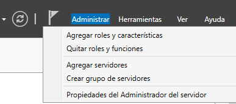
Seleccionar Agregar roles y características. Seguir el asistente para promocionar el servidor como Controlador del Dominio. Instalamos los servicios de dominio de AD y DNS.
Vídeo 1. Promocionar servidor a Controlador del Domino.
La ip del servidor ha de ser fija. En caso contrario, en la promoción a CD nos dará un warning.
2.2. Instalar Radius
Una vez se tiene el entorno listo, procedemos a instalar RADIUS, para ello, hay que seleccionar Agregar roles y características de la opción 'Administrar' del Panel principal.
A continuación, hay que seleccionar ‘Servicios de acceso y directivas de redes’. Una vez se finaliza la instalación del Rol, se crea en el panel un nuevo rol llamado NPAS.
Una vez instalado el servicio, hay que crear un nuevo grupo en AD al que llamaremos Radius, para ello, vamos a ‘Usuarios y equipos de Active Directory’ y creamos el grupo Global y de seguridad ‘radius’. Este grupo es el que se utilizará para integrar en el mismo aquellos usuarios del dominio que se autenticarán con Radius.
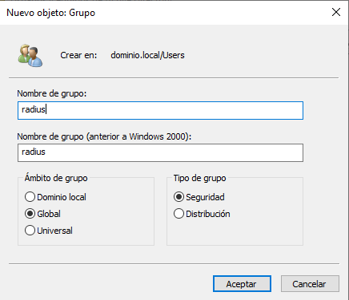
A continuación, creamos un usuario que incluiremos en el grupo para permitirle conectar al servidor radius. Las credenciales del usuario serán las siguientes:
- cuenta: radiustest
- password: Camina-100
- La contraseña nunca caduca.
NOTA: La contraseña debe cumplir los requisitos de complejidad.
Con el comando net accounts, podemos comprobar los requisitos de contraseña configurados.
C:\> net accounts
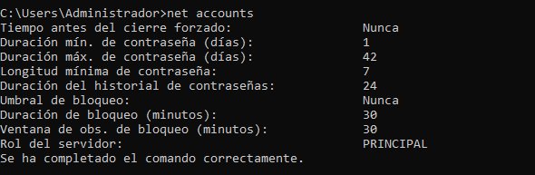
Referencia:
A continuación, se muestra la pantalla de creación del nuevo usuario.
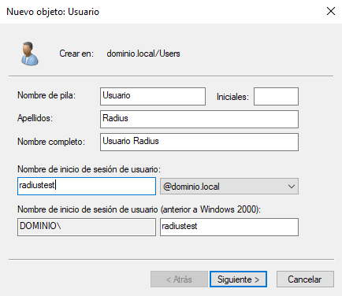
El siguiente paso es incluir el usuario en el grupo radius, para ello, abrimos una consola en Powershell y ejecutamos el siguiente cmd let:
PS C:\>Add-ADGroupMember -Identity radius -Members radiustest
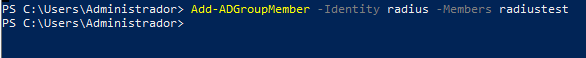
Activar el marcado en el usuario
A continuación, hay que acceder a las propiedades del usuarios creado y activamos en la pestaña de marcado del usuario ‘Permiso de acceso a redes’ → Permitir acceso.
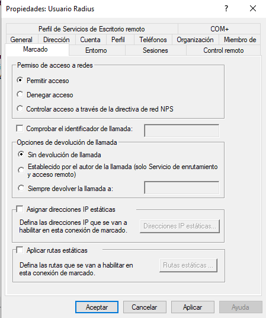
Con esto, tenemos el usuario configurado y listo.
Configurar el ‘Servidor de directivas de redes’
Hay que acceder a la herramienta ‘Servidor de directivas de redes’, para crear un nuevo cliente RADIUS.
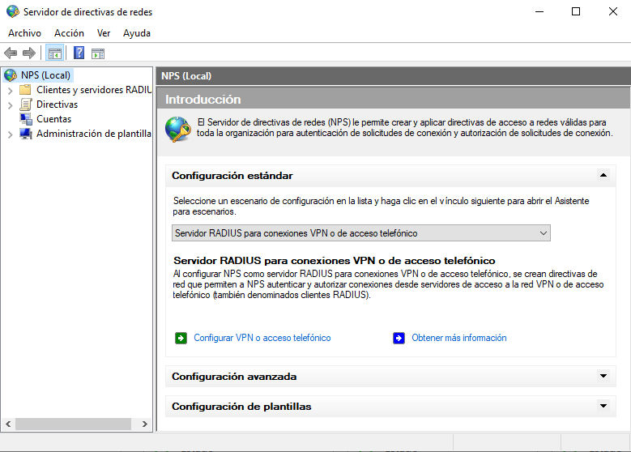
Estando en el nodo 'Clientes RADIUS' del árbol de la izquierda (ver imagen inferior), pulsamos el botón derecho del ratón y seleccionamos 'Nuevo'.
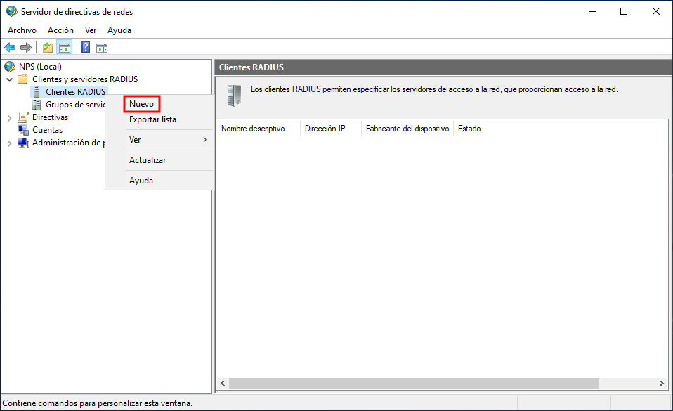
En la pantalla de la imagen inferior, introducimos los siguientes datos:
- 'Cliente-Radius' es el nombre que le ponemos al equipo NAS (cliente radius)
- La dirección ip del equipo NAS,
- El secreto compartido, ponemos una contraseña, para este caso de ejemplo: CcliRadius.
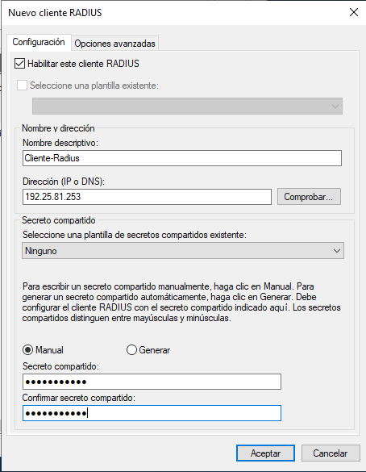
Pulsamos Aceptar, y ya tendremos configurado el cliente Radius.
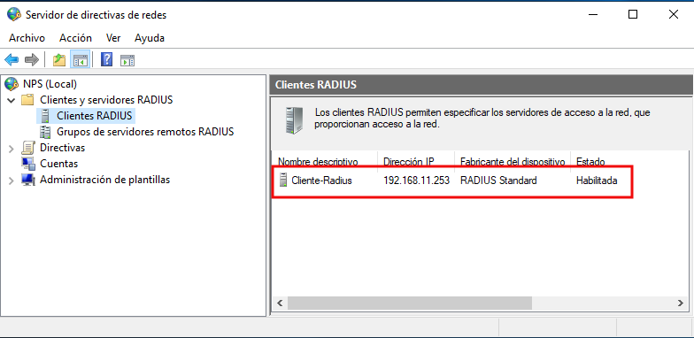
El siguiente paso es configurar las Directivas, para ello, en el nodo 'Directivas de red' (está dentro del nodo directivas) del árbol izquierdo (ver imagen superior) → pulsamos el botón derecho del ratón y seleccionamos 'Nuevo'.
En la Pantalla de 'Nueva directiva de red' hay que introducir un nombre, para este caso de ejemplo, le ponemos 'VPN Administracion', ya que los usuarios del departamento de Administración se autenticarán en el servidor Radius por medio de una VPN. En el 'Tipo de servidor de acceso a la red', seleccionamos Servidor de acceso remoto (VPN).
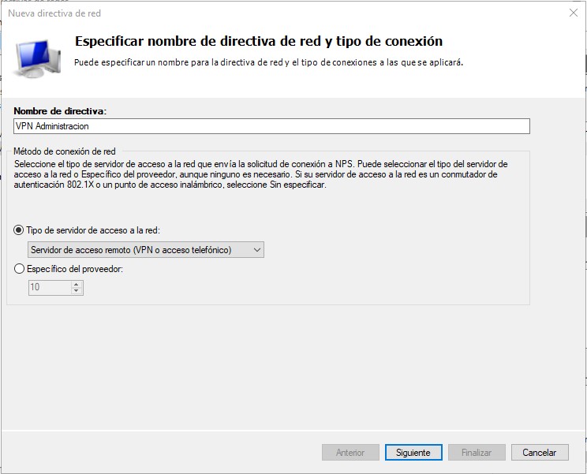
Pulsamos 'Siguiente' para avanzar.
En la Pantalla de ‘Especificar Condiciones’ → Pulsamos ‘Agregar’ y vamos a seleccionar ‘Grupos de Windows’.
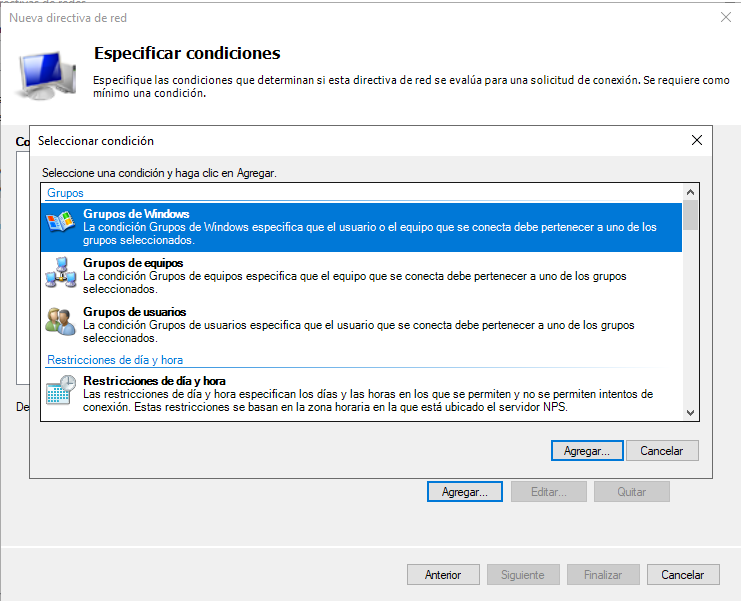
Después en ‘Grupos’ → Seleccionamos el grupo radius (el que creamos). Es decir, daremos acceso los usuarios que pertenezcan al grupo radius.
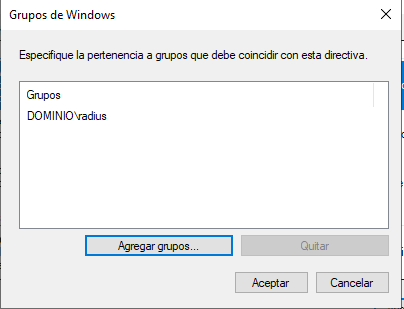
Una vez agregado el grupo, pulsamos ‘Siguiente’ par continuar.
En la pantalla de ‘Especificar permiso de acceso’, seleccionamos 'Acceso concedido' y pulsamos ‘Siguiente’ par continuar.
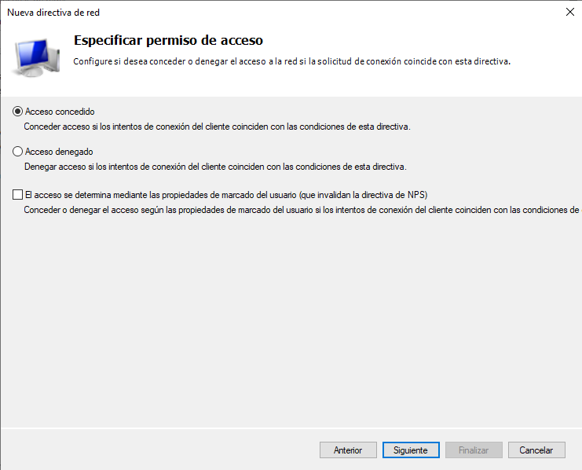
En la pantalla ‘Configurar métodos de autenticación’ → Pulsamos ‘Agregar’ y seleccionamos el protocolo ‘EAP-MSCHAP v2' y pulsamos 'Aceptar'.
Generalmente cuando son puntos de acceso, se utiliza PEAP.
La sección de 'Métodos de autenticación menos seguros' lo dejamos seleccionado tal como está en la imagen inferior.
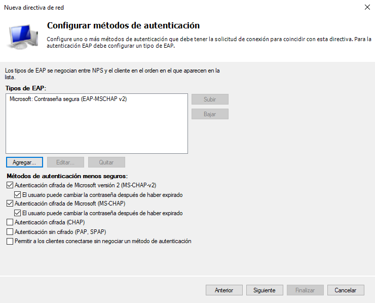
En un caso real, si se desea securizar lo máximo posible habría que deseleccionar los 'Métodos de autenticación menos seguros 'para que no se puedan utilizar. Para este caso de estudio, los dejaremos tal como están.
A continuación, pulsamos ‘Siguiente’ para continuar.
En la pantalla ‘Configurar restricciones’, lo dejamos todo igual, aunque según los requerimientos que se tengan, se podrían configurar restricciones de horario, etc..
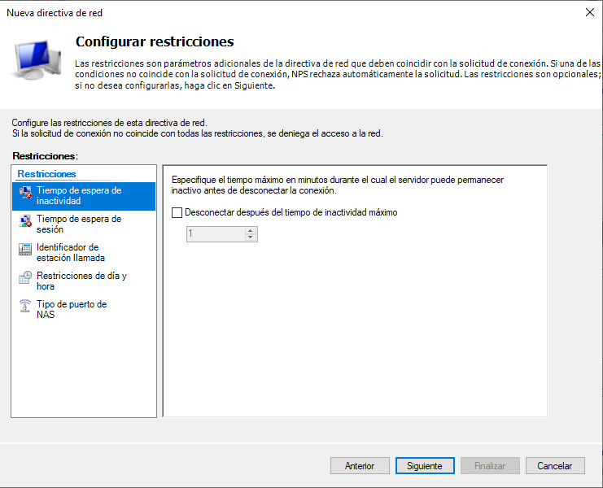
A continuación, pulsamos ‘Siguiente’ para continuar. En la pantalla 'Configurar opciones’, lo dejamos todo igual.
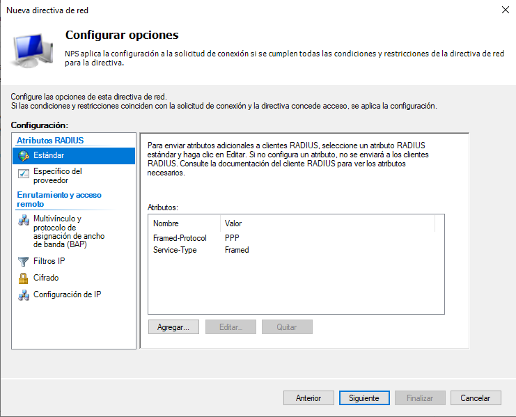
A continuación, pulsamos ‘Siguiente’ para continuar. Aparece una nueva pantalla con el resumen de las configuraciones realizadas, donde podremos comprobar que todo está correcto. Para finalizar el proceso, pulsamos 'Finalizar'.
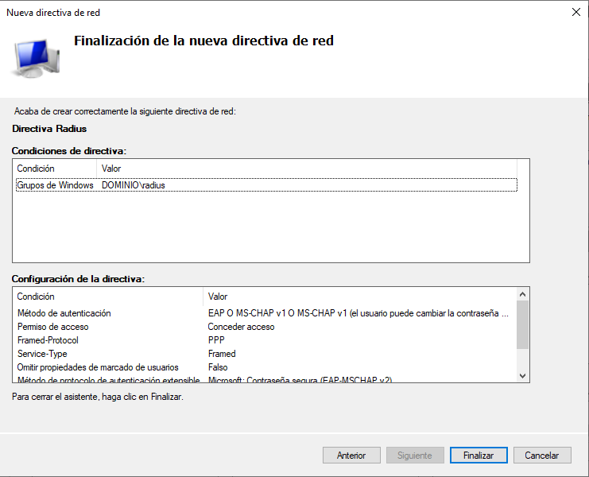
Con esto ya tenemos configurado nuestro servidor Radius. Nos faltaría configurar nuestro Firewall para permitir las conexiones remotas, para ello, accedemos al Firewall de Windows.
Dentro de 'Configuración', seleccionamos ‘Centro de redes y recursos compartidos’ (ver imagen inferior).
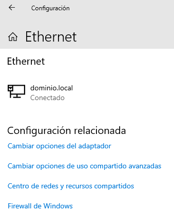
A continuación, seleccionamos ‘Firewall de Windows Defender’ (figura inferior).
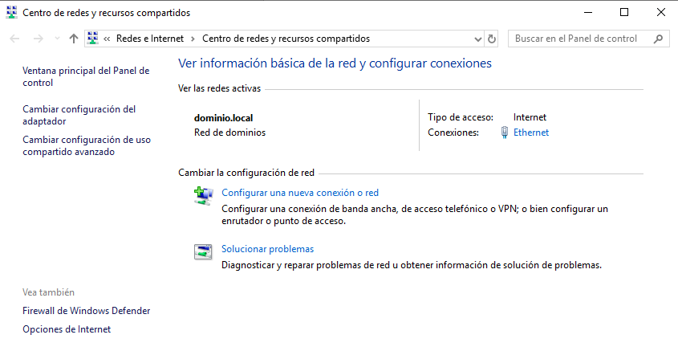
Nos aparecerá la siguiente pantalla (ver imagen inferior), donde hay que pulsar el enlace 'Configuración Avanzada' para poder abrir el puerto para hacer la conexión.
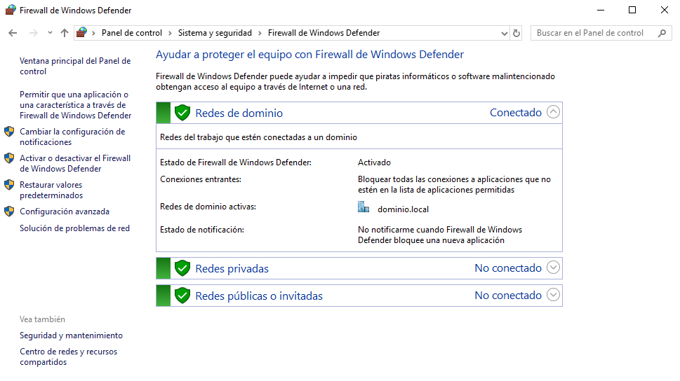
Hay que acceder al nodo 'Reglas de entrada' para crear una nueva.
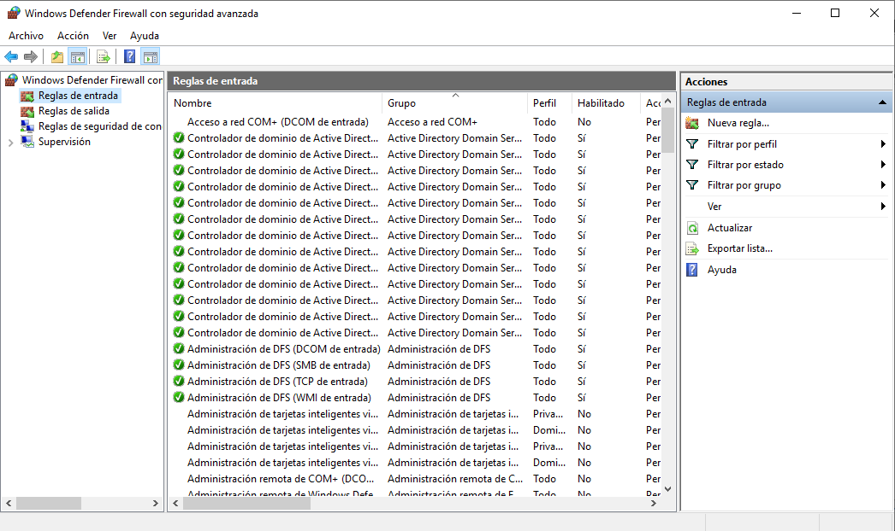
En la nueva ventana, hay que seleccionar el option ‘Puerto’ y pulsar ‘Siguiente’ (ver imagen inferior).
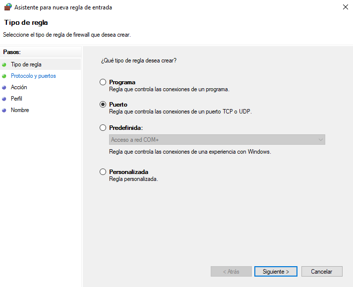
Radius utiliza varios puertos. Para la autenticación utiliza el 1812 UDP, por lo que hay que introducir el puerto 1812 UDP y pulsar ‘Siguiente’.
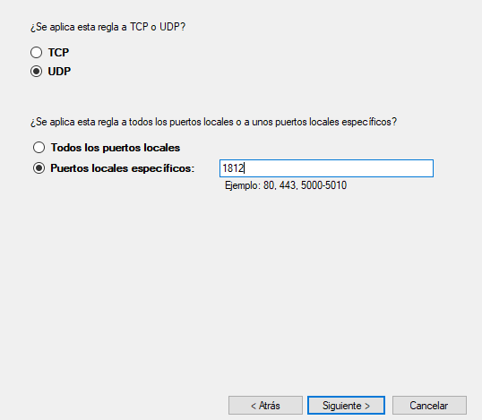
En la siguiente pantalla, hay que seleccionar ‘Permitir la conexión’ y pulsar ‘Siguiente’.
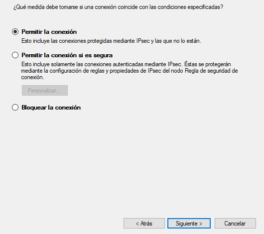
En la siguiente pantalla, aplicamos la regla a todo: Dominio, Privado y Público .
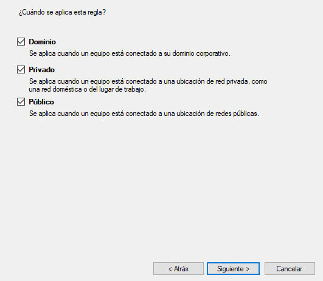
Para finalizar, ponemos un nombre descriptivo y pulsamos ‘Finalizar’.
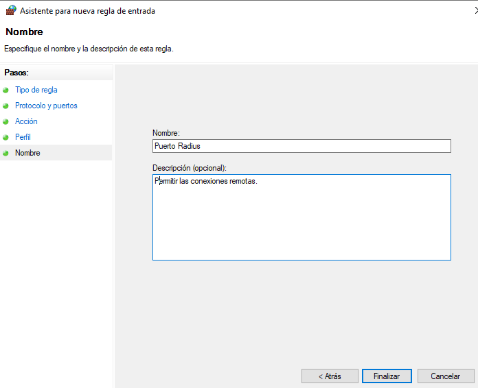
Con esto, ya se tiene montado el servidor RADIUS. Para probar la conexión usamos una máquina virtual o el anfitrión/host que esté en el mismo segmento de red que el servidor RADIUS.
Para este caso de estudio, se utiliza un equipo ubuntu server 20.04 donde hay que instalarle la utilidad freeradius-utils.
#apt install freeradius-utils
A continuación, hay que añadir en el fichero hosts que está ubicado en /etc/hosts, el nombre del equipo con su ip.
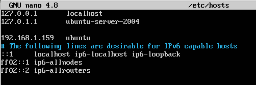
A continuación, hacemos una prueba con el paquete instalado:
#radtest -x -t mschap radiustest password123456. 192.168.1.124 1812 CcliRadius
Los parámetros que deberemos pasar a radtest son:
- usuario: Usuario que queremos comprobar contra el servidor RADIUS ( radiustest).
- contraseña: La contraseña del usuario, para este caso de estudio es: password123456.
- radius-server: IP o nombre del servidor, para este caso de estudio es: 192.168.1.124
- puerto UDP: 1812.
- secret: Contraseña compartida (Secreto compartido ) con el servidor RADIUS para realizar consultas (CcliRadius).
Antes de ejecutar el comando, hay que asegurarse que los servicios están iniciados, para ello, realizamos lo siguiente:
- Acceder a nps.msc→ Autorizamos al servidor NPS para usar Active Directory en la autenticación de usuarios y grupos. Se hace con clic derecho en NPS y luego registramos el servidor. Además, esto permite el control de usuarios a través de las propiedades de marcado.
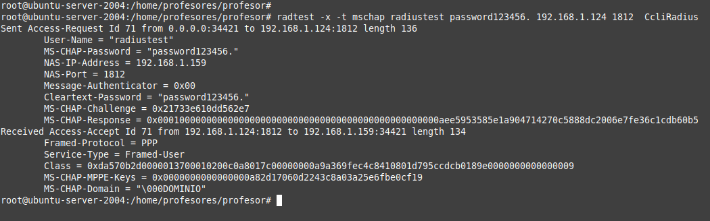
3. Referencias
- https://docs.microsoft.com/es-es/windows-server/networking/technologies/nps/nps-plan-server
- https://iescelia.org/ciberseguridad/configuracion-de-radius-en-windows-server-2019/
- https://techexpert.tips/es/apache-es/apache-autenticacion-radius-en-active-directory/
- https://social.technet.microsoft.com/Forums/es-ES/0ba9b0f4-686f-49b8-ab6c-a7e435e5548a/ver-usuarios-conectados-a-traves-de-mi-server-radius?forum=wsnies
- Autenticación en Active Directory vía RADIUS GNU/Linux
- http://systemadmin.es/2011/08/hacer-una-query-contra-un-radius-desde-command-line
- https://docs.microsoft.com/es-es/windows-server/remote/remote-access/ras/otp/plan/step-2-plan-the-radius-server-deployment
Obra publicada con Licencia Creative Commons Reconocimiento No comercial Compartir igual 4.0